|
Even before the dawn of civilization, tribal peoples developed shamanistic healing practices of a rather sophisticated nature. Many of these traditions survive today in cultural contexts where scientific medicine is unavailable either because of distance or cost. These modes of healing have been examined throughout the world by Stanley Krippner, professor of psychology and director of the Center for Consciousness Studies at the Saybrook Institute in San Francisco. Krippner has coauthored (with Alberto Villoldo) Healing States and Realms of Healing. 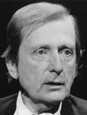 Stanley Krippner (courtesy Thinking Allowed Productions) In a Thinking Allowed interview, Dr. Krippner summarizes his understanding of shamanistic healing practices involving spiritualistic views: Some of the more sophisticated of the Brazilian practitioners have said, "You know, the worst black magic is the black magic we commit against ourselves. It is the sorcery that hurts ourselves when we think negative thoughts, or we hold onto a destructive self concept, or when we allow ourself to say negative, hostile things about ourselves and the people around us, and those sentences go over and over in our mind. It is no wonder, then, that people get stomach aches and backaches and headaches with those negative thought images going around."I then asked Krippner if he would extend his pragmatic point of view to situations where a healer is actually using out-and-out fraud, such as some of the cases of alleged psychic surgery, where fraud seems to be used and then people recover. He responded: The amazing thing is that there is a history of sleight of hand in shamanism, and sometimes the sleight of hand is used for very benign purposes. In other cases it's used to earn a buck. But sometimes, sleight of hand will be used by the shamans, especially when they do the cupping and sucking routine, and they suck on a person's skin and their mouth fills up with black fluid and they spit it out, and they say, "OK, I've sucked all the poison out of you." Usually, that's tobacco juice, and sometimes the patient knows that's tobacco juice, but that's beside the point. It's the ritual that is so important. The shaman is saying, "I have sucked that poison out of you," OK, the patient is sometimes willing to let go of what has been poisoning him or her, symbolically, and that can be very beneficial from a therapeutic point of view.
In the Egyptian temples of Imhotep an art of healing known as incubation was practiced. It is known that Imhotep is the architect who designed the first known pyramid for the Pharaoh Zosar around 2700 B.C. He developed a reputation as a magician and healer and some 2000 years later came to be regarded as a god. Exactly how this deification occurred is uncertain. However, people with illnesses would go to his temple and sleep there. It is claimed he appeared to them in their dreams and healed them. This tradition, which was carried on in the Greek temples with the healing God Asclepios, implies at the very least a very practical understanding of hypnotic suggestion--if not actual spiritual healing. An Egyptian text dating from over 3,000 years ago, called the Bent-rosh Stela describes the sufferings a princess endured in a profound experience described as "possession by a spirit." The ministrations of the local psychiatrist or "artist of the heart" were insufficient to relieve her suffering. However, an immediate cure was affected upon the arrival of a high priest of Thoth who brought with him a great stone statue of the healing moon-deity aspect of the god. His journey had taken nearly a year and a half. These techniques were preserved by the priesthood and also passed through mystery cults associated with the pyramids and sphinx.
It is hard to appreciate the enormous influence
of the healing temples which dotted the ancient world and served as both
hospitals and centers of learning. Hippocrates, the father of western medicine,
received his training at the temple of Asclepios on the Island of Kos.
An Inner Healing Advisor I had an opportunity to explore a process very akin to that used in the ancient healing temples, during a videotaped InnerWork interview with Dr. Martin Rossman, author of Healing Yourself With Mental Imagery. 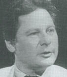 Dr. Martin Rossman (courtesy Thinking Allowed Productions) According to Dr. Rossman, the "inner healing advisor" can take a wide variety of forms when the mind is prepared through deep relaxation and suggestion (or hypnosis). It may appear as an animal, as a wise person, as a spirit or even as a diety. His key directive is that one must accept and attempt to learn from whatever imagery appears. During our session, while in a trance state, the image appeared of a stately Roman wearing a toga who identified himself as "Seneca." Thinking of the Roman playwrite (I had heard on the radio that afternoon), I tried to change the image. If my inner advisor was to be one of the ancients, I thought, I would rather have Demosthenes who, born with a speech impediment, rose to be one of the greatest Greek orators. Although I did try, I found I was unable to change the image. Seneca remained. Accepting the image at face value as my "inner healing advisor," I entered into a dialogue and asked Seneca how we could work together. The response was, "Study my life." Upon awakening from the hypnotic session, I was struck by the vividness and intensity of the experience. I have subsequently spent a good deal of time studying the remarkable life of this ancient writer (and even arranged a visit to Cordoba, Spain, where Seneca was born). He was not only a playwrite, but also a statesman, scholar and philosopher who wrote extensively on matters of health and healing. 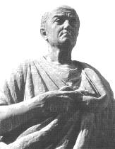 Statue of Seneca in Cordoba, Spain (courtesy Janelle Barlow) Although Seneca lived a productive life until the age of 69, he frequently suffered from asthma and other diseases. Based on the tradition of Stoicism, Seneca maintained a philosophical balance between an acceptance of fate and a continual search for virtuous self-improvement. He once offered this prescription to a friend who was suffering from illness: Call to mind things which you have done that have been upright or courageous; run over in your mind the finest parts that you have played. And cast your memory over the things you have most admired; this is a time for recollecting all those individuals of exceptional courage who have triumphed over pain....If pain has been conquered by a smile, will it not be conquered by reason?...Comforting thoughts contribute to a person's cure; anything which raises one's spirits benefits one physically as well. Seneca's advice is reminiscent of an old Jewish tradition which prescribes the recitation of the Song of Solomon -- the most sensuous of biblical texts -- as a remedy for ill health. I regard the ostensible contact with Seneca as meaningful from a deep healing perspective -- one in which healing, to the extent that it occurs, is a natural outcome of a balanced, philosophical (i.e., love of wisdom) approach to life. Such a perspective differs in scope and depth from those schools of thought that view healing as a consequence of particular techniques. Christian healing is, when practiced within
the context of Christian principles as a way of life, another example of
deep healing. Numerous examples of miraculous cures, in fact, are to be
found within the spiritual traditions of all cultures.
Mesmerism In the eighteenth century, the Age of Reason, techniques for healing through suggestion and consciousness alteration rose to the very forefront of public attention. Franz Anton Mesmer (1734-1815), a Viennese trained physician who held to the old astrological beliefs, initiated this new era of consciousness exploration. 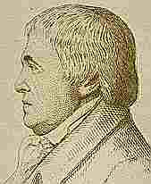 Franz Anton Mesmer Mesmer hypothesized that the planets affected human beings through an influence resembling magnetism. This was the subject of his doctoral dissertation at the University of Vienna. It was a reasonable hypothesis at the time, as magnetism in Mesmer's day constituted a challenge to physical science -- the solution to which might shed light on the mysteries of the psyche. Mesmer, however, ventured beyond mere hypothesis into the realm of pseudoscience when he began treating patients for a variety of ailments by applying magnets to their bodies. Later he stopped using magnets and maintained that any curative influence emanated from the hands and nervous system of the healer. He believed this influence, which he named animal magnetism, could be transmitted to objects held in or stroked by the hand. It could then be discharged to a patient through a suitable conductor. In 1778 he moved to Paris and attracted great notoriety with many patients and pupils among the wealthy classes. In order to deal with the crowds of patients he attracted, he devised a wooden tub filled with water and iron filings, and containing many bottles of "magnetized water." Iron rods protruded from it that could be applied to diseased or damaged parts of his patients. Clothed in a magician's gown and wand, Mesmer himself moved among the company, making magnetic passes over his patients to a background of soft music and mysterious lighting. Many cures of various diseases were noted. Often they were preceded by convulsive movements and rapturous noises. Numbered among Mesmer's acquaintances, and possibly his patients, were Mozart and his family, King Louis XVI and his queen, Marie Antoinette, as well as Empress Maria Theresa of Austria. In 1784, the French government appointed an official commission to investigate Mesmer. It was composed of several renowned scientists including Antoine Lavoisier, "the founder of modern chemistry" and Benjamin Franklin. They reported to the Academy of Sciences and the Royal Society of Medicine that the "magnetic fluid" was a myth. Although Mesmer's techniques did give rise to certain psychophysiological states that might result in the curing of diseases, they agreed with the assumption that Mesmer played upon the imagination of his subjects. Primarily their report stressed the immorality of the healer making magnetic passes over the bodies of his female patients. Mesmer's reputation waned somewhat. He
remained in Paris until 1789 when he fled the revolution. He never regarded
himself as a fraud. From his writings there is evidence that he was aware
his treatments held a greater significance than simply curing patients.
Animal Magnetism The most influential of Mesmer's pupils, the Marquis De Puysegur, discovered that patients could be put by "Magnetization" into a sleep-like somnambulistic state in which cures could also be affected. Patients in this state showed themselves unusually responsive to the suggestions of the mesmerist, and could be made not only to perform actions, but also to feel emotions or to entertain delusional beliefs. Ordinary senses might be heightened, and other psychic sensitivities seemed to be induced. Of this state, Mesmer writes: The somnambulist may perceive the past and the future through an inner sense of his. Man is in contact through his inner sense with the whole of nature and can always perceive the concatenation of cause and effect. Past and future are only different relations of its different parts.Some patients would diagnose and prescribe for their own ailments, and sometimes they would do this for others using clairvoyance. Puysegur emphasized the importance of the will of the therapist as the directing influence behind the mesmerizing process and claimed the ability to put people into a trance telepathically. Ultimately his theories were no less influential than Mesmer's on the history and development of consciousness. The rules of magnetizing, based on Puysegur's theories, were published in 1825 by Joseph Philippe Francois Deleuze: Cause your patient to sit down in the easiest position possible, and place yourself before him, on a seat a little more elevated, so that his knees may be between yours, and your feet by the side of his. Demand of him in the first place that he give himself up entirely, that he think of nothing, that he do not trouble himself by examining the effects that he experiences, that he banish all fear, and indulge hope, and that he be not disquieted or discouraged if the action of magnetism produces in him temporary pains.
In 1831 a second government report was issued that was much more favorable to the mesmerists. Students of Mesmer were in practice throughout Europe and by that time most of the characteristic phenomena were well known. These included: Amnesia
The majority of those interested in mesmerism could be divided into two camps -- those who believed in psychic phenomena and accepted some version of the magnetic fluid theory, and those who did not. The first camp evolved into numerous "new thought," spiritualist and Christian Science movements. James Braid (1795-1860) did the most to make mesmerism acceptable to the second group by changing the name to hypnotism and referring to the process strictly as a matter of "suggestion." Modern depth psychiatry and psychoanalysis evolved from Braid's use of hypnosis in treating clinical disorders. The state of our scientific understanding
of healing is still at a very primitive level. It wasn't until 1959, for
example, that the American Medical Association officially approved hypnosis
as a therapeutic tool.
Holistic Faith Healing Mental healing today is widely practiced and is gaining increasing attention from researchers. The variety of alternative forms of healing is enormous and overwhelmingly confusing. Such therapies include acupuncture, Alexander technique, aromatherapy, Aston patterning, astrological diagnosis, aura analysis, Auyervedic medicine, Bach flower remedies, Bates method, bioenergetics, biofeedback, biorhythms, charismatic healing, chiropractic, Christian Science, color therapy, copper effects, crystal healing, cupping, diet and health, fasting, Feldenkreis work, herbs, homeopathy, hypnotherapy, iridology, Joh Rei healing, Kirlian diagnosis, laying on of hands, macrobiotics, magnetic passes, meditation, moxibustion, naturopathy, negative ions, osteopathy, past lives therapy, phrenology, polarity balancing, prayer, psychic surgery, psychosomatic healing, pyramid energy, radiesthesia, radionics, reflexology, Reichian therapy, Rikei healing, Rolfing, sexual therapy, shamanic healing, Shiatsu and acupressure, spiritual healing, Tai Chi Ch'uan, toning, and yoga. Undoubtedly, some of these practices are predicated upon valid insights into the workings of the human body. Others are based upon theories which have virtually no validity or empirical support. The positive results which sometimes stem from the use of such techniques is almost certainly unrelated to the theories that are claimed. Virtually, any method can activate a placebo effect which is one of the strongest healing principles known to humanity. Every drug which is released for medical use in the United States is tested for its efficacy in comparison with a placebo. Placebo is a Latin word meaning "I shall please." A placebo is simply a sugar pill, or some other inert substance, which is administered to a test population (called a "control group") under the same environmental and psychological conditions as the drug to be tested. Researchers have been amazed that the positive changes reported from placebo use often rival those of medicinally potent medicines. Studies have even shown that placebos are capable of activating the body's own mechanisms for producing natural pain killer substances called endorphins. Many of the alternative healing approaches, regardless of the merits of their other claims, emphasize creating conditions particularly conducive to the placebo effect. For example, in an article on "healer-healee interactions and beliefs in therapeutic touch," Rene Beck and Erik Peper describe five key concepts as essential to the healing process: (1) What we communicate by attitude, act, and word as well as the setting we provide will affect our potential to heal; (2) what the healer believes is important; (3) all persons involved are interconnected -- there can be no independent observer; (4) some of the essential qualities may neither be observable nor measurable; and (5) time may contract or expand.There are many different theories of healing. Harry Edwards, one of the grand old statesmen of British spiritual healers, put the matter rather simply: The healing energies emanate from the nonphysical dimension of spirit. Healing takes place, according to Edwards, when there is a merging of the spiritual and physical aspects of being. Basing his teachings on the somewhat outdated concepts of Rene Descartes, Edwards postulated that this merging of the physical and nonphysical takes place in the pineal gland. In today's "post-modern" society, there
are many practitioners of healing and psychic arts who are not willing
to acknowledge the inner dimensions of their work. Captivated by the scientistic
mythology of our age, they build mysterious looking pseudoscientific devices
to which they then attribute remarkable healing abilities.
Radionics Radionics is the term applied to a social movement concerned with diagnosis and healing through the use of complicated devices -- or black boxes -- that (although no one understood how they worked) resulted in miraculous cures. 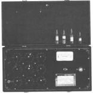 Radionics "Black Box" The father of this movement was Dr. Albert Abrams, a professor of pathology at Stanford University's medical school. Basing his discoveries on the philosophy that all matter radiates information that can be detected by his instruments in conjunction with the unconscious reflexes of another human being, Abrams succeeded in attracting a large following and also arousing the unremitting ire of the medical and scientific establishment. Thousands of self-professed healers were effecting cures, making diagnoses, and even removing pests from gardens merely by twisting dials, swinging pendulums, or rubbing their fingers across strange devices., The following passage describes the use of one such instrument known as the Delawarr machine: Suppose that it is required to find out the condition of a patient's liver. We place a bloodspot or saliva sample in one of the two containers at the top of the main panel, according to whether the patient is male or female, and start turning the tuning knob slowly, passing the fingers of the right hand over the rubber detector at the same time with a series of "brushing" strokes until a "stick" is obtained. The patient's bloodspot is then tuned into the set. The stick refers to a particular rubbing sensation in the finger. The location of the dials when the "stick" occurs, when properly translated is said to indicate the diagnosis of the disease. When the disease is tuned in to the instrument, the cure can be "broadcast" over any distance, to the patient. Other radionic developments are said to have been even more startling, such as the camera developed by the Los Angeles chiropractor, Ruth Drown. Using nothing but a drop of blood, it is claimed that this camera could take pictures of the organs and tissues of patients-sometimes at a distance of thousands of miles. She also claimed to take pictures in "cross-section" a feat that cannot be duplicated even with X-rays. While she received a British patent for her apparatus, Drown was persecuted as a charlatan by the FDA. A story about Drown's ability is told by the cosmologist Arthur M. Young, who invented the Bell helicopter: Ruth Drown was truly an angelic sort of a person--if you can imagine an angel in the flesh. She started reeling off these Pythagorean relationships that just made my mind spin. I couldn't keep up with her. It wasn't on the first occasion, but maybe on the second, that I wanted to put her to a test. I was at that time having a toothache. So I asked her if she would diagnose my condition and take a photograph. But I didn't tell her anything. And she took these photographs that were about eight by ten. It looked like a very detailed picture of teeth. She put the film in this box, but there were no lenses or anything like that. Whatever this radiation was, it exposed the film. It was not done with light. And she got a photograph of the tooth. Being scientific in nature, I said, "Now do it again." This was all in the dark. She couldn't see me. So I pressed the tooth hard with my finger to make it hurt more, to see what would happen. The next picture was an enlargement of this same tooth. Today there are two developments effecting the standing of radionics. On the one hand, researchers in a new area dubbed psychotronics are taking a serious interest in understanding the possible mechanisms such instrumentation might have., In fact, several new radionics devices have recently been manufactured with computerized components. At the time of this writing, there is no clear indication that such new devices represent any genuine advance in the arcane art of radionics. There is no reason to suspect that a major breakthrough is at hand. On the other hand, a number of radionic practitioners and investigators have reported that after becoming proficient in the use of the "black boxes," they were able to obtain the same effects without them., One radionics expert, Frances Farrelly, demonstrated her ability to work without her instrument at the International Conference on Psychotronics in Prague in 1973: ...she was confronted by a professor from the Czechoslovak Academy of Sciences who gave her a chip of mineralized rock and asked her before a large audience if she could state its origin and age. Rubbing the table before her to get a radionic type "stick," Farrelly, after putting a dozen questions to herself, stated that the mineral in question came from a meteor and was about 3,200,000 years old, answers which exactly matched the most considered conclusions of expert Czech mineralogists.It was her contention she had learned to "run the instrument in [her] head." Perhaps, then, the "black box" is to radionics what the pencil is to arithmetic -- a tool for focusing consciousness within the structure of a disciplined system. Edgar Cayce Perhaps the most prominent twentieth century practitioner of psychic diagnosis and prescription healer was Edgar Cayce (pronounced Casey) who died in 1945. Cayce originally received hypnosis treatment for his own asthma. While in an unconscious trance state, Cayce made diagnoses and prescribed treatments for thousands of individuals. 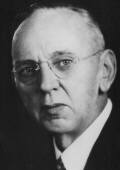 Edgar Cayce Although Cayce tried to arrange for his patients to be treated by qualified physicians, like all unlicensed healers, he met with a deeply entrenched opposition from the medical profession. It was, however, a homeopathic doctor, Wesley Ketchum, M.D., who examined the records of Cayce's treatments and made a favorable report, in 1910, to the American Society of Clinical Research at Boston: I have used him in about 100 cases and to date have never known of any errors in diagnosis, except in two cases where he described a child in each case by the same name and who resided in the same house as the one wanted. He simply described the wrong person.Files of over 9,000 readings by Edgar Cayce are kept on record by the Association for Research and Enlightenment in Virginia Beach, Va. Since 1931, this organization has attempted to foster scientific investigation of Cayce's healings. 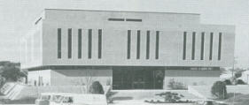 Library of the Association for Research and Enlightenment Critics of Edgar Cayce argue that the cures
which he outlined while in a trance state seem very much in the homeopathic/naturopathic
tradition of Dr. Ketchum himself. A very real possibility exists here that
many of Cayce's notions were actually suggested to him while he was in
the hypnotized state. Skeptics also point out that no bona fide scientific
studies have ever actually verified the efficacy of Cayce's cures. Therefore
the massive records housed by the Association for Research and Enlightenment
have resulted in almost no scientific advance in our understanding of the
healing process. Nevertheless their contribution to the folklore of healing,
and other psychic matters, has been enormous. Over thirty books have been
published describing the details of Cayce's prescriptions.
Psychic Surgery Many forms of spiritual healing, including some derived from the New Testament are based on the notion of driving out evil spirits or demons. This approach is practiced by (otherwise) sophisticated Christian faith healers in the United States as well as by folk healers and "psychic surgeons" in third world countries such as Brazil and the Philippines. In these countries, healers often appear to remove ugly black tobacco leaves and other unsightly objects from the bodies of the ill. While slight of hand is generally used to create the effect of spiritual intervention, the theoretical premise is that these objects were implanted as the result of dark magic or sorcery. These cases of psychic surgery center around healers whose talents are said to be guided by powerful spirits. Operations are performed without the benefit of anesthesia or antisepsis, under unsterile conditions, often without even the benefit of a knife. Blood appears. Tissue is removed. And yet, when the procedure is completed there is often no trace of a wound or an opening. As Dr. Andrija Puharich has put it, these operations mimic, yet violate every principle of modern surgery. One of the most extraordinary accounts in the literature of psychic surgery is one in which psychologist Alberto Villoldo participated as an assistant to Dona Pachita, a Mexican healer. 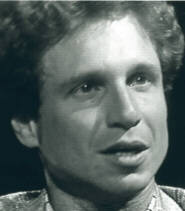 Alberto Villoldo (courtesy Thinking Allowed Productions) Villoldo describes how Dona Pachita performed surgery while in trance and assuming the personality of Cuahutemoc, an Aztec prince. During this procedure, she appeared to removed a cancerous tumor from the urinary bladder of a Texas woman and then insert a new human bladder purportedly obtained from a local medical school. The operation was performed under unsterilized conditions using a hunting knife. Villoldo describe how, at the instructions of the healer, he actually placed helped to removed tissues from the woman's abdomen and insert the new bladder -- during which time his own finger was accidently cut by the hunting knife. The session was also witnessed by Gabriel Cousens, an American doctor of medicine, who stated: There was no question in my mind that she was opening the skin; there was no question that I was smelling blood. I could see the opening in the abdomen...and I could see Pachita's hands going into the bladder area, into the abdominal cavity. There is no question in my mind that things had been taken out from these incisions and things put back in. I had no doubts that I had seen authentic "psychic surgery."Approximately 90 minutes after the "operation," Cousens examined the patient and observed: The best that I could understand from the English speaking woman was that she had experienced some pain. [She was] still wrapped in sheets and it appeared as if [she was] still experiencing some kind of trauma -- psychological or physical, or perhaps both. [She was] dazed; this brought back memories of being in post-operative anesthesia rooms in hospitals where people had not regained full consciousness. [She was] not given medication or drugs of any kind before or during the "operation." I examined the woman from Texas and found there was a scar, and it had apparently "healed" more rapidly than any scar I have ever seen immediately after "surgery." There were no stitches. It looked reddish but not particularly inflamed and as if it were perhaps a month old. I was told that the scar tended to disappear within a few weeks.This account by Villoldo and Cousens is so extraordinary as to be virtually unbelievable. (In fact, in 1976, I conducted a radio interview with Villoldo in which this episode was discussed. It was the only instance in hundreds of broadcasts that actually provoked a listener to phone in and voice obscenities.) Many readers may feel more comfortable believing that Cousens and Villoldo were deceived (or participating in a deception), rather than accept their account at face value. However, their account was neither the first nor the last in the puzzling area of psychic surgery. During the period from 1963 to 1968, Andrija Puharich, then a senior medical researcher at New York University, conducted studies in Brazil with the wonder-healer Jose Pedro de Freita -- known by his nickname Arigo. Born in 1918, Arigo received four years of education in primary school, worked as a mine laborer, and also owned his own small restaurant. At the age of 30 he entered into a period of severe depression, nightmares, sleep talking and sleep-walking. For two years neither a doctor nor a priest were of any benefit to him whatsoever. Finally a local spiritualist, Sr. Olivera, prayed for Arigo and told him a spirit was trying to work through him. In 1950, Arigo first achieved unsought fame as a healer, during a visit to the city of Belo Horizonte. There he happened to stay at a hotel where state senator Bittencourt, who had been diagnosed with an inoperable colonic tumor, was also a guest. According to Puharich, Arigo entered Bittencourt's room early one the morning, telling him to lie down on the bed. Then he produced a razor and proceeded to remove a tumor from Bittencourt's abdomen. Subsequent diagnosis indicated that the tumor dissipated. Bittencourt's pajamas were torn and an orange-sized piece of tissue was found in the hotel room. While there was blood on his pajamas and body, no scar was found. Eventually Arigo went on to do surgery of a similar kind in public. Puharich himself claims to have observed over one thousand instances in which Arigo diagnosed and treated patients --with complete accuracy as far as he himself was able to determine.
"We found we were able to verify 550 verdicts, because in those cases we ourselves were able to establish a pretty definite diagnosis of the problem. In the remaining 450 cases, for example in rare blood cases, we could not be certain of our own diagnosis because we lacked available on-the-spot resources to enable us to do so. But of those of which we were certain we did not find a single case in which Arigo was at fault. Every patient was helped and none had post operative complications."Puharich was further impressed with the accuracy and sophisticated terminology of the medical prescriptions Arigo frequently gave. Puharich claims that the medical team he worked with was never able to find a mistake in the medical or registered trade name of a drug prescribed. Thousands of surgical operations were conducted under conditions Puharich described as resembling a train station at rush hour. In order to satisfy his own curiosity, Puharich even allowed himself to be operated on. Arigo agreed to operate on a benign tumor on his elbow. The scene was a crowded room with some ninety people gathered around as spectators. With a flourish, Arigo asked that someone furnish him with a pocket knife; this was produced. Arigo asked Puharich not to watch the operation so Puharich turned his head toward his cameraman who was filming a motion picture. Within a matter of seconds, Arigo placed the tumor and the pocket knife in Puharich's hands. In spite of being perfectly conscious, Puharich had not experienced any pain or even any sensation at the surgical site. Yet there was a bleeding incision and a tumor. Knowing that the knife was dirty, that his skin was not cleansed and that Arigo's hands were not clean, Puharich suspected he might get an infection -- perhaps even blood poisoning. Nevertheless, the wound healed clean without a drop of pus in three days, according to Puharich, half the time required under normal precautions. According to Arigo, however, all of this is very simple: "I simply listen to a voice in my right ear and repeat whatever it says. It is always right." Arigo claims this voice belongs to a deceased German medical student, Adolphus Fritz. However, after five years of observation, Puharich still felt unable to arrive at any conclusion as to the reality of "Dr. Fritz" as an independent spirit. Arigo has been twice put in jail for the illegal practice of medicine. In 1971, he died of an automobile crash. Nevertheless, other healers continue to be active in Brazil where the spiritualist movement has even established its own hospitals. The psychic surgeons of the Philippines are renowned for their ability to operate without knives, removing tissue, yet leaving no wounds. This phenomena has consistently been extremely controversial and the healers have often been accused of fraud even by those who studied them sympathetically. This undoubtedly places the healers in a questionable legal and moral position; however it does not answer the scientific question. Hundreds of home movies have been taken by Americans who went to the Philippines with serious ailments. Medical doctors who have examined these patients before and after their treatment are reportedly often baffled. In December 1988, my wife Janelle and I were in the Philippines and had the opportunity to witness a psychic surgery session in Manilla with Alex Orbito -- one of the most prominent and respected healers who is president of the Philippine Healers Association. Orbito generously allowed us to observe and photograph freely. We witnessed over twenty instances of ostensible psychic surgery over a period of several hours. At the end of the session, Janelle was convinced that the whole business was easily explained as slight of hand. She pointed out the many movements that Orbito made where he could have hidden various animal parts that he could have palmed and then later produced as evidence of blood and removed tissues. I found her hypothesis quite acceptable, but not proven. Other observers, such as Canadian psychologist Lee Pulos, have observed and filmed hundreds of sessions with Orbito and are convinced that they are genuine. Jesus B. Lava, M.D., conducted an interesting study of psychic surgery. Lava was a political activist. Between 1950 and 1954 he served as Secretary General of the Communist Party of the Philippines. In 1964 he was captured by the military and detained for ten years as a political prisoner. Following his release, at the age of 60, he felt that the only thing left for him would be to get involved in something apolitical and, yet, of social relevance. He set up a research and healing center, under the auspices of the Philippine Society for Psychical Research, which allowed him, over a period of several years, to observe the procedures of the native healers and to conduct follow-up studies of his own with patients. Dr. Lava's report of his findings reads very much like the work of a man who, believing in psychic surgery, wanted to obtain the strongest possible evidence of its success. Yet, as an honest researcher, he was nevertheless forced to admit that his results were quite limited. For example, Lava could find no objective evidence that psychic surgery could extirpate or excise tumors. And his admitted that "fakeries abound." While he did acknowledge that the Philippine methods did "at least give relief to suffering," this was so uneven that it was "not possible to predict the probabilistic results of a particular healing session." Lava also admitted that whenever he was allowed to examine the materials supposedly removed from a patient through psychic surgery they showed "no significant relation to diseased tissues." Perhaps most significant is Lava's report that healers are somehow able to create incisions in the skin without the use of surgical instruments: Another form of energy or force, perhaps, is involved in the instrumentless incision done from a distance of one foot by the mere stroke of the healer's finger, or anybody's finger held by the healer. (This force is capable of passing through the x-ray plate interposed between the finger and the skin, without itself being cut.)Lava's account, if true, would be quite remarkable. Yet in all other respects, the procedure is rather conventional: The subsequent procedure, however, follows orthodox surgery. The opening is widened by the fingers and the cyst isolated and pulled out by pincers. Closing is by pressure of the fingers on the skin flaps followed by the application of adhesive tape. After two or three days the wound is completely healed with hardly a scar. There seems to be no susceptability to infections.Skeptics who have witnessed this same procedure are convinced that the trick is accomplished through slight of hand with a hidden razor blade. My own position as regards psychic surgery
as well as many other equally unbelievable claims is one of zetetic skepticism.
I find no need to jump to a conclusion that the phenomena are either real
or false in the absence of clear and convincing evidence one way or the
other. I am perfectly willing to tolerate the ambiguity and to accept that
I do not know what really happened. If I were seriously ill, I doubt that
I would be further harmed by psychic surgery treatments. However, my own
choice, and my strongest recommendation to readers, is that such treatment
only be obtained while working in close consultation with a medical doctor.
The risk in seeking exotic, alternative treatments is that of neglecting
or overlooking essential forms of basic health care -- both attitudinal
and medical interventions.
Delusion and Fraud There can be little doubt that, whether or not healing actually works, fraud is certainly rampant. One of the best expose's of fraudulent practices is James Randi's book The Faith Healers. A practicing magician and a tireless crusader against fraudulent supernatural claims, Randi describes the great lengths to which he and his colleagues have gone in order to uncover many unsavory practices cloaked in the trappings of religion. 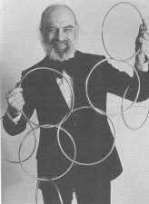 James Randi While implicitly accepting the possibility of serious psi research into the claims of healers, Randi claims that none of the faith healers he questioned were able to provide any solid evidence of a single healing that could be attributed to supernatural intervention. His book leaves little doubt that he uncovered blatent fakery in the ministries of Leroy Jenkins, W. V. Grant and Peter Popoff. He noted, however, that the claims of many faith healers -- such as Pat Robertson and Richard Roberts -- could not be examined scientifically because they were scaled-down and non-falsifiable. For example, Randi quotes from a Pat Robertson broadcast: "There is a woman in Kansas City who has sinus. The Lord is drying that up right now. Thank you, Jesus. There is a man with a financial need -- I think a hundred thousand dollars. That need is being met right now, and within three days, the money will be supplied through the miraculouys power of the Holy Spirit. Thank you, Jesus! There is a woman in Cincinnati with cancer of the lymph nodes. I don't know whether it's been diagnosed yet, but you haven't been feeling well, and the Lord is dissolving that cancer right now! There is a lady in Saskatchewan in a wheelchair -- curvature of the spine. The Lord is straightening that out right now, and you can stand up and walk!"With such claims, Randi claims, the task of evaluation "can be compared to trying to nail a handful of grape jelly to a wall." There is little question, however, that Pat Robertson's followers are convinced and that their conviction has been backed up by generous donations to his evangelical ministry and television broadcast operations. Healing at Lourdes One of the investigators of spontaneous remissions and supposedly miraculous healings was the late Brendan O'Regan, formerly vice president for research of the Institute of Noetic Sciences, and former research coordinator for Buckminster Fuller at Southern Illinois University. 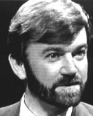 Brendan O'Regan (courtesy Thinking Allowed Productions) During a Thinking Allowed television interview on "The Mechanisms of Healing," O'Regan provided this vivid description of the the Catholic healing shrine at Lourdes: The classic assembly of data where spiritual events or deeply psychological events are involved, are the cases of apparent miraculous cures in Lourdes, which have been documented since 1858. The International Medical Commission at Lourdes, which has been in existence in current form since 1947, first asks when a claim is presented, if it could be a remission. If they think that the disease could have healed naturally, they throw it out from further consideration.British psychiatrist and psychical researcher, Donald West, examined the records of 11 cases of cures at Lourdes judged by the Catholic church as "miraculous." Although aware from previous experience how difficult it was to obtain sufficient medical information to be able to draw any conclusions from cases of faith healing, West felt that the situation at Lourdes would be different because "the files at the Lourdes Medical Bureau contain an accumulation of medical data on faith cures that has no parallel elsewhere." Although the cases he reviewed were among the best documented on record, he showed that even in these crucial information was missing. A similar conclusion was also reached by James Randi, who looked into some Lourdes healings. Mental Imagery Of course, it is almost impossible, within a scientific framework, to accept the strict worldview of healers who battle illness by invoking the power of Christ, Thoth or Asclepios; by searching for lost souls in the underworld; by fighting evil sorcerers with magical weapons; by enlisting the aid of spirit doctors; or by application of animal magnetism and radionics. Yet, within the past fifteen years, many researchers have recognized a common thread in almost all shamanistic/spiritual healing -- the use of mental imagery. Contemporary researchers might well lose their jobs for seriously considering that a shaman became a raven, for example, and flew into the nether realms to fight for the soul of the healee. But to accept that the shaman mediated a healing process through the use of vivid mental imagery is a viable research hypothesis which is bearing fruit. Studies have shown, for example, that transcendental meditators report fewer instances of allergies and also infectious diseases than before they began meditating regularly. Other studies conducted at the University of Rochester over a 20 year period have shown that the presence or absence of cancer n a patient can be predicted on the basis of the feelings of "hopelessness" which the person has toward life in general. Studies of this sort have led to the development of a recognized specialty in psychosomatic medicine. Doctors now realize that the attitudes of their patients are just as significant as the symptoms of their disease. In Fort Worth, Texas, for example Dr. Carl Simonton -- in addition to treating cancer patients with conventional radiation, chemotherapy, and surgery -- has also used relaxation and visualization techniques. 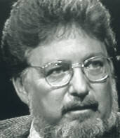 Dr. O. Carl Simonton (courtesy Thinking Allowed Productions) The patient is asked to meditate regularly three times a day for 15 minutes in the morning upon arising, around noon, and at night before going to bed. In the meditation exercise, the first couple of minutes are used to go into a state of relaxation, then once the body is completely relaxed, the patient visualizes a peaceful scene from nature. A minute later, the patient begins the major part of the work of mental imagery. First, he tunes in on the cancer, sees it in his mind's eye. Then as Simonton describes it, "he pictures his immune mechanism working the way it's supposed to work, picking up the dead and dying cells." Patients are asked to visualize the army of white blood cells coming in, swarming over the cancer, and carrying off the malignant cells which have been weakened or killed by the barrage of high energy particles of radiation therapy given off by the cobalt machine, the linear accelerator, or whatever the source is. These white cells then break down the malignant cells which are then flushed out of the body. Finally, just before the end of the meditation, the patient visualizes himself well. The patient is instructed in the general
principles of the immune mechanism and is shown photographs of other patients
whose visible cancers-such as on the skin and mouth- are actually responding
to the treatment, getting smaller and disappearing. In a study of 152 patients,
Simonton found the greatest success with those who were the most optimistic
and committed to full participation in the entire therapeutic process.
Furthermore, these patients also showed fewer distressing side-effects
to the radiation therapy. These results are very encouraging. However,
further research and longer follow up studies are necessary before the
medical establishment can form a conclusive judgement on the radical possibility
of using psychological treatment to cure organic disease.
Omega Seminar Techniques As an Omega Seminar trainer, I myself have had the opportunity to function as a mental healer of sorts. Founded over thirty years ago by John Boyle, the Omega seminar teaches a number of powerful techniques for accomplishing goals -- predicated upon the assumption that one can access the power of the superconscious mind through the use of positive affirmations. In many seminars I have successfully helped participants alleviate discomfort from headaches, sinus conjestion and stomach aches by simply repeating the affirmation, "I CAN!" Neck, shoulder and back pain has shown a similar positive response to the affirmation, "I DON'T HAVE TO!" In fact, I have never seen these techniques fail to work -- at least temporarily -- within the seminar context. Another technique from the Omega Seminar has consistently worked like magic to alleviate long-term, chronic pain such as that resulting from athletic or automotive injuries. The method is simple. I find a volunteer who is experiencing pain and ask them to visualize the pain as being a certain color. Then I ask them to compare the size of the pain to a fruit (i.e., watermelon, cantalope, grapefruit, orange, plum, cherry, raisin). Once they have identified a color and a fruit, I ask them to imagine that the pain is shrinking in size (to a fruit of a slightly smaller size). This generally takes only a few moments. As the pain shrinks in size, I keep asking them to tell me what color it is (the color generally changes with size). After the pain has been reduced to about the size of a raisin (which can take from five to ten minutes of concentrated visualization), I ask them to shrink it further to the size of a matchhead -- and then to imagine that they are simply flicking it away from their body. Inevitably, when the exercize is finished the pain is gone -- at least temporarily. While these Omega techniques are far from a wholistic approach to deep healing, they clearly demonstrate the power of suggestion in dealing with pain and the control which we can exert over our state of well-being on a moment to moment basis. Many other affirmations can be used for long-term health goals. A model which has been been promoted by both medical doctors and scientists, such as Steven Locke at Harvard University, refers to "the healer within." This approach assumes that within each of us is an intelligence which has a deep understanding of our emotional and physical well-being. Using the principles of psychoneuroimmunology and psychoneuroendocrinology, this intelligence, when activated, is capable of producing dramatic, positive changes in health. A variety of methods can be used to activate the inner healer -- including progressive relaxation, autogenic training, biofeedback and hypnosis. This is essentially the perspective Dr. Martin Rossman used in our interview during which I engaged in an internal dialogue with an image of the ancient Roman, Seneca. The perspective toward healing described by Seneca almost 2,000 years ago is not at all unlike that transpersonal psychologists such as Frances Vaughan, author of The Inward Arc. Vaughan suggests that a lifestyle aimed at integrating spiritual, philosophical and psychological teachings can lead to healing and wholeness on any level of consciousness. Such a lifestyle involves a metaphoric awareness of spiritual paths and an awareness of dreams. Healing relationships are described by Vaughan as "an essential aspect of emerging awareness of wholeness and optional relational exchange at any stage of development." At this point many readers will feel justifiably
entitled to ask whether any of this healing, by whatever name and mythology,
actually works. A good question! Let's look at one carefully conducted
case study of an individual healer:
A Case Study In 1955, the Institute for Border Areas of Psychology and Mental Hygiene, headed by Professor Hans Bender in Freiburg Germany, conducted a thorough study of a mental healer, Dr. (of political science) Kurt Trampler. This study, while not indicative of any paranormal healing, does give us a good picture of the role which psychological factors can play in the healing process. Trampler was seeking to exculpate himself legally as he had been tried and found guilty of violating the statutes governing medical practice. In light of hundreds of testimonials from his patients, the Board of Health ruled that a research study would be of sociological and medical interest. Trampler's philosophy and methods are not untypical of psychic healers in general. He stresses the need for the patient to establish a "reconnection with the fundamental source of life." In his view sickness is a "disturbance in man's contact with the higher interrelationships of life." Each treatment session begins with a philosophical discussion of this sort, eloquently delivered in a manner found appealing to an audience of varied backgrounds. Trampler then "charges" the patient with his own raised hands, held at some distance. He claims that he can feel the streaming of "an impulse which is transmitted to the patient who then, by some so far unexplained process of a spiritual or energetic nature seems to bring about a change for the better." The patient describes his own sensations during this "atunement." He experiences feelings of warmth and cold, a prickling sensation or a sense of a powerful current. To sustain his therapy Trampler gives the patients sheets of aluminum foil which he has first "charged" in his hand and which upon returning home the patients are to lay on the afflicted spots or spread out under their pillows, or even carry constantly on their persons. Every evening at a certain hour Trampler tunes in on all his patients. In his preliminary lecture, he gives notice of this "remote treatment" and cites examples of its success. During a six month period, 650 patients treated by TrampIer were examined intensively by a research team before treatment. Follow up studies were conducted on 538 of these individuals. Two thirds of these patients were women. As far as educational, occupational, or family background the patients were representative of the population of the area surrounding Freiburg. A wide variety of maladies was found in this group. Almost 75% of the patients were chronic cases who had been suffering for more than five years from the conditions which prompted them to see the mental healer. Over half of them were simultaneously undergoing medical treatment-which is something that Dr. Trampler encouraged. They had come to the mental healer because other modes of treatment had failed. Medical evaluation indicated unexpected, objective improvement in 9% of Dr. Trampler's patients. On the other hand, 61% of Trampler's patients had the subjective experience of permanent or temporary improvement in their condition. In fact, 50% of those patients whose condition had objectively worsened nevertheless declared that they were considerably better, at least temporarily. The subjective improvement of the malady seemed to depend very little on the diagnosis or seriousness of the disease. The results indicated that the subjective improvement was chiefly a function of the attittide which the patients had before treatment by Dr. Trampler. Patients with the highest expectations seemed to respond the most. Oddly enough, the patients who responded
the least to Dr. Trampler's methods were more intelligent, imaginative,
and self-confident than those who seemed to benefit the most. The patients
who experienced the greatest improvement were, however, more relaxed! In
no case was Trampler's treatment found to be objectively harmful to the
patient! Experimental evidence suggestive of psychic healing effects will
be further examined in Section III.
Ramacharaka's Healing Exercise If after having read this far, you are much more willing to explore the potential for healing you may possess yourself, you may find the following passages, written more than eighty years ago by Yogi Ramacharaka, of practical value. Remember prana is the Hindu term for the life energy that permeates the atmosphere, enters the human being through the breath, and can be directed by thought: Pranic Healing
The exercises and techniques presented above by Ramacharaka can be very powerful and effective. However, they do not necessarily provide the only or the deepest approach to healing. Another very profound point of view is exemplified in the writings and teachings of Stephen Levine, a poet, an author, a spiritual teacher. Stephen has written numerous books, including Who Dies?, Meetings on the Edge, Healing into Life and Death, and (with Ram Dass) Grist for the Mill. His perspective is summarized in a Thinking Allowed interview: 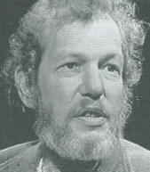 Stephen Levine (courtesy Thinking Allowed Productions) The very idea that you are a good person if you heal, makes you a bad person if you die. Who needs to die with a sense of failure? Many have been injured by the idea that you are responsible for your illness. You are not responsible for your illness; you are not responsible for your cancer. You are responsible to your cancer. When we see that we are responsible to our illness, then when pain arises we can send mercy, we can send kindness.
. Charles Muses, "Trance Induction Techniques in Ancient Egypt," in Consciousness and Reality, pp. 9-17. . Martin Rossman, Healing Yourself With Mental Imagery. New York: Walker & Company, 1987. . Martin Rossman, Healing Yourself With Mental Imagery (#W352), an InnerWork videotape available from Thinking Allowed Productions, Berkeley, CA. . As Nero's unofficial chief minister, Seneca literally admistered the Roman empire during five prosperous and peaceful years which were later described by the emporer Trajan as the finest period in the history of imperial Rome. He was the leading intellectual of his time and elevated the Graeco-Roman philosophy of Stoicism to a new height of humanistic synthesis. He stood alone in opposing the slaughter of gladiators and slaves in the Coliseum. His spiritual writings served as a great inspiration to the early Christian fathers who claimed him as one of their own. His drama was a major influence on virtually all of the great Renaissance playwrites. And his influence apparently still lives. Ordered to commit suicide by Nero in 65 A.D., Seneca's last words to his beloved friends and family was said to be, "Study my life." One historian has written that in all of history, no one (with the exception of Socrates) was more prepared to face death than was Seneca. . Seneca, Letters from a Stoic. (trans. by Robin Campbell). London: Penguin, 1969, Letter LXXVIII. . Rabbi Nathan of Nemirov, Rabbi Nachman's Wisdom, (trans. by Rabbi Aryeh Kaplan). Brooklyn: Leonard Kaplan, 1973. . Benjamin Franklin, Lavoisier, Bailly, Guillotin, et al., "Secret Report on Mesmerism or Animal Magnetism," in Ronald E. Shor & Martin T. Orne (eds.), The Nature of Hypnosis. New York: Holt, Rinehart & Winston, 1965, p. 37. . Suzy Smith, ESP and Hypnosis. New York: Macmillan, 1972, p. 27. . Franz Anton Mesmer, Memoire sur la Decouverte du Magnetisme. Quoted in ibid. . The word pass is common to all magnetizers: it signifies all the movements made by the hand in passing over the body, whether by slightly touching, or at a distance. . J. P. F. Deleuze, "Rules of Magnetising," in The Nature of Hypnosis, pp. 24-29. . Charles Richet, Thirty Years of Psychical Research, trans. by Stanley de Brath. New York: Macmillan, 1923, p. 22. Richet is a French physiologist, also a Nobel Laureate, who figures prominently in the early years of psychical research. . Frank Podmore, From Mesmer to Christian Science. New Hyde Park, NY: University Books, 1965. In this context, it is somewhat understandable that an International Study Group on Unorthodox Healing sponsored by the Parapsychology Foundation in 1954 concluded that it would be premature to consider an alleged psychic influence in the multifarious types of mental healing before the whole field had been investigated in regard to its normal aspects. It would be fair to maintain that this task is far from complete. . Rene Beck, & Erik Peper, "Healer-Healee Interactions and Beliefs in Therapeutic Touch: Some Observations and Suggestions," in M.D. Borelli & P. Heidt (eds.). Therapeutic Touch: A Book of Readings. New York: Springer, 1981, pp. 129-137. . Harry Edwards, "The Organization Behind the Healing Intelligence," Journal of Pastoral Counseling, 6(2), Fall-Winter 1971/1972, 15-20. . Peter Tompkins & Christopher Bird, The Secret Life of Plants. New Y#H: Harper & Row, 1973, pp. 317-360. . A. R. G. Owen, Psychic Mysteries of the North. New York: Harper & Row, 1975, p. 125. Owen briefly describes his research with a radionics operator. . Vernon D. Wethered, An Introduction to Medical Radiesthesia and Radionics. Ashingdon, Rochford, Essex, England: C. W. Daniel Company, 1957, p. 75. . Tompkins & Bird, op. cit., 333. . Arthur M. Young, "Reflections." Transcribed from a seminar at the Institute for the Study of Consciousness, Berkeley, California. . Francis K. Farrelly, "The Enigmatic Status of Radionics in the United States," First International Conference on Psychotronics, Prague, 1973. . William A. Tiller, "Radionics, Radiesthesia and Physics," The Varieties of Healing Experience. Los Altos, CA: Academy of Parapsychology and Medicine, 1971. . Tompkins & Bird, op. cit., pp. 350-351. . Arthur M. Young, unpublished study. . Tompkins & Bird, op. cit., 351. . James Randi, "Edgar Cayce: The Slipping Prophet," Skeptical Inquirer, IV(1), Fall 1979, 51-57. . Stanley Krippner & Alberto Villoldo, The Realms of Healing (third edition). Berkeley: Celestial Arts, 1986, p. 24. . Ibid., 24. . Andrija Puharich, M.D., "Some Biophysical Aspects of Healing," Dimensions of Healing, Los Altos, CA: Academy of Parapsychology and Medicine, 1973. . Ibid. . Anne Dooley, Every Wall a Door. New York: E. P. Dutton, 1974, p. 144. Dooley here is quoting Puharich. . Under these circumstances, such a high degree of reported accuracy would lead most observers to question the diligence of those reporting such a claim. In the realm of healing 100% accuracy claims are almost inevitably the mark of a true believer and not an independent observer. . Puharich, op. cit. . Anne Dooley, op. cit. . Tom Valentine, Psychic Surgery. Chicago: Henry Regnery, 1973. . Jesus B. Lava & Antonio S. Araneta, Faith Healing and Psychic Surgery in the Philippines. Manila: The Philippine Society for Psychical Research Foundation, 1983. . Ibid, p. 10. . Ibid., p. 6. . James Randi, The Faith Healers. Buffalo, NY: Prometheus Books, 1989. Astronomer Carl Sagan, in his forward to Randi's The Faith Healers, maintains that "the book can properly be described as a tirade." He further characterizes Randi as "rambling, anecdotal, crotchety and ecumentically offensive." Yet, in spite of his many weaknesses, I recommend Randi's writings. The enormity of the problems in these areas, and the timidity of more reasonable individuals to critique such outrageous (yet influential) claims, has created a cultural vacuum which Randi, in his unique way, fills. . Ibid., p. 199. . Brendan O'Regan, The Inner Mechanisms of Healing (#S238) in Perspectives on Healing (#Q284), videotapes available from Thinking Allowed Productions, Berkeley, CA. . Donald J. West, Eleven Lourdes Miracles. New York: Garrett/Helix, 1957. p. viii. As an objective presentation of the difficulties involved in assessing the efficacy of faith healing, this book is valuable for anyone with an interest in the subject. It contains an appendix of cures accepted by the Lourdes Medical Bureau in the period 1925-1950. . Randi, op. cit. . Jeanne Achterberg, Imagery in Healing: Shamanism and Modern Medicine. Boston: New Science Library, 1985. . Anees A. Sheikh (ed.), Imagination and Healing: Imagery and Human Development Series. Farmingdale, NY: Baywood Publishing, 1984. . F. Papentin, "Self-purification of the Organism and Transcendental Meditation: A Pilot Study," in D. W. Orme-Johnson, L. Domash, & J. Farrow (eds.), Scientific Research on Transcendental Meditation: Collected Papers, Vol. l. Los Angeles: MIU Press, 1975. . A. H. Schmale Jr, M.D. & P. Iker, Ph.D., "The Affect of Hopelessness and the Development of Cancer," Psychosomatic Medicine, 28, 1966, 714-721. . Jean Shinoda Bolen, M.D., "Meditation in the Treatment of Cancer," Psychic Magazine, August 1973, p. 20. . O. Carl Simonton, M.D., "Management of the Emotional Aspects of Malignancy," Symposium of the State of Florida, Department of Health and Rehabilitative Service, June 1974. . Steven Locke & Douglas Colligan, The Healer Within: The New Medicine of Mind and Body. New York: E.P. Dutton, 1986. . Frances Vaughan, The Inward Arc: Healing & Wholeness in Psychotherapy & Spirituality. Boston: New Science Library (Shambhala), 1986, p. 7. . Inge Strauch, "Medical Aspects of Mental Healing," International Journal of Parapsychology, 5, 1963, 140-141. . Interestingly enough, another survey indicates that two-thirds of the psychic healers in Britain are men. Sally Hammond, "What the Healers Say," Psychic Magazine, August 1973. . Strauch, op. cit. . Yogi Ramacharaka, Yogi Philosophy and Oriental Occultism. Chicago: Yogi Publishing Co., 1931, pp. 154-163. . Yogi Ramacharaka, The Hindu-Yogi Science of Breath. Chicago: Yogi Publishing Co., 1905, pp. 68-72. . Ibid. . Stephen Levine, Conscious Living/Conscious
Dying (#W343), an InnerWork videotape available from Thinking Allowed Productions,
Berkeley, CA.
|